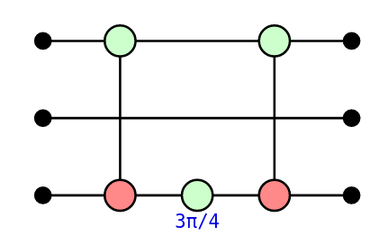
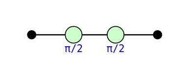
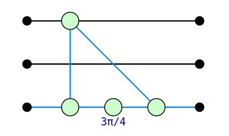
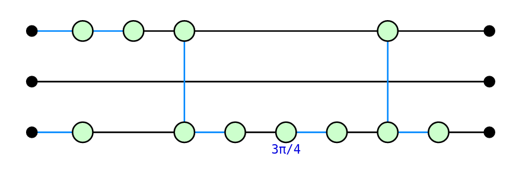
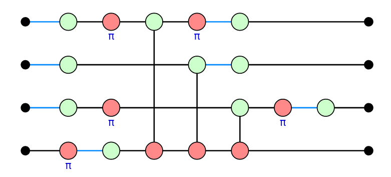
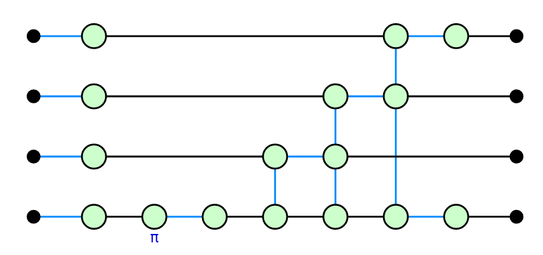

PyZX is an implementation of the ZX-calculus. It stands apart from the other quantum programming environments presented in these tutorials in that it is not intended to be used to actually program a quantum computer. Rather, it is to be used as an interface to programmatically manipulate the rules of the ZX-calculus. As the name suggests, it is written in, and provided as a package for, the Python programming language. There are other implementations of the ZX-calculus, such as in Rust or Julia, but neither are as feature complete as PyZX. In particular, although the Rust implementation is considerably faster, it lacks many of the features of PyZX. In particular, PyZX includes tools for visualizing and manipulating ZX-diagrams which can be conveniently used inside a Jupyter notebook.
The ZX-calculus and it’s applications to quantum computation are the subject of ongoing research, and currently PyZX only implements a rather limited subset of rewrite rules of the ZX-calculus. These rewrite rules have been found to be useful in applications, mostly for the optimisation and compilation of quantum circuits.
PyZX is made available as a PyPi package, which can then be installed
via pip install pyzx and imported as usual:
import pyzx as zx
from fractions import Fraction # Used to described fractional phasesQuantum circuits are represented in PyZX using the
Circuit class, whose underlying data consist in a list of
gates taken from those defined in PyZX. For instance:
circ = zx.Circuit(3) # The initialisation argument describes the number of qubits in the circuit
circ.add_gate("CNOT", 0, 2)
circ.add_gate("ZPhase", 2, phase=Fraction(3,4))
circ.add_gate("CNOT", 0, 2)The gates supported by PyZX are defined in the
pyzx.circuit.gates submodule, and we refer you there for
the auxiliary arguments that must be given for each gate type (or to
calling help(zx.circuit.gates)).
PyZX provides an interface for importing circuits for several of the
other programming languages from these tutorials. In particular, the
Circuit methods from_qasm,
from_quipper make it possible to import circuits from the
OpenQASM 2.0 and Quipper formats respectively. The load
method tries to detect the correct format for an argument filename then
applies the corresponding import method. Lets import one of the circuits
from the Qiskit tutorial:
circ2 = zx.Circuit.from_qasm("""
OPENQASM 2.0;
include "qelib1.inc";
qreg q[4];
h q[0];
cx q[0],q[1];
cx q[3],q[1];
""")Note that PyZX does not support the entire OpenQASM 2.0 standard. For
instance, quantum measurements cannot be described in PyZX, and
therefore will not be correctly imported. Of course, PyZX also provides
the corresponding methods for writing a circuit out to these format, in
the form of the to_qasm, to_quipper (and so
on) methods.
PyZX also defines functions for randomly generating circuits.
Unfortunately, these are not all declared in the submodule
__init__.py files, so must be imported individually:
from pyzx.generate import CNOT_HAD_PHASE_circuit
qubits = 3 # number of qubits in the circuit
depth = 5 # number of gates in the circuit
circ3 = CNOT_HAD_PHASE_circuit(qubits, depth, p_had=0.2, p_t=.3)ZX-diagrams are represented in PyZX by an instance of the
BaseGraph class, the underlying data of which consist in a
simple graph along with some additional data on vertices. Specifically,
the vertices are labelled by (not necessarily contiguous) integrers, and
there are four types vertices: Z-spiders, X-spiders, H-boxes, and
boundaries (which represent either an input or an output of the
diagram). The type of a vertex is given by an integer, whose value is
defined in pyzx.utils.VertexType by the constants
VertexType.BOUNDARY, VertexType.Z,
VertexType.X, and VertexType.H.
A note on backends: In fact, BaseGraph
is a “shell” class that merely defines the interface that any ZX-diagram
class must implement in PyZX. There are a number of different backend
implementations provided in the pyzx.graph submodule. The
current default is GraphS, a purely Pythonic implementation
of the interface. The zx.Graph() function constructs an
instance of an implementation of BaseGraph, currently
GraphS.
To construct an empty ZX-diagram, we write:
diagram = zx.Graph()We can add vertices to the graph using the add_vertex
and add_vertices methods, which furthermore return the
indices of the newly-created vertices:
diagram.add_vertices(3)We can then set the type and phase (if necessary) of a vertex as follows:
for vertex in range(0, 3):
diagram.set_type(vertex, zx.VertexType.Z)
diagram.set_phase(0, Fraction(2,3)) # The second argument is a fraction of 2 * piWe can check the type of a vertex with:
print(diagram.type(2) == zx.VertexType.Z)Similarly, we can add edges to the graph using:
diagram.add_edge((0,1)) # Adds an edge between vertices 0 and 1
diagram.add_edge((1,2)) # Adds an edge between vertices 1 and 2However, this isn’t really the “standard” way to instantiate a ZX-diagram. It’s much more common to obtain one from a quantum circuit of interest, and PyZX of course provides a method to do so. To convert our circuit to a diagram, we write:
circ_diagram = circ.to_graph()We can then visualise the diagram with:
zx.draw(circ_diagram)
An interactive visualisation can be obtained using the PyZX graph editor. The editor can be used to manipulate vertices of the diagram, apply rewrite rules or even arbitrary edits to the diagram:
zx.editor.edit(circ_diagram)Click “Save snapshot” to save the result back into
circ_diagram. Within the PyZX editor, you will note that we
can also apply some of the ZX-calculus rewrite rules to our diagram.
Let’s next see how we can do this programmatically.
The syntax for applying a result is a little complex. Rewrites are
applied by calling the zx.simplify.simp function, which
takes 4 non-optional arguments:
diagram to apply the rewrites to;name, which simply describes a name to
display;match, which finds non-intersecting
matches in diagram of the LHS of the rewrite rule to
apply;rewrite, which rewrites each match to the
RHS of the rule.The rewrite rules that were available in the editor all have
match and rewrite functions which are
described in the pyzx.rules submodule. These each come in a
version that finds a single match, and a version that tries to find as
many non-overlapping matches in the diagram as possible, dubbed
“parallel” versions.
Let’s apply the spider fusion rule to the following simple diagram:
circ4 = zx.Circuit(1) # The initialisation argument describes the number of qubits in the circuit
circ4.add_gate("ZPhase", 0, Fraction(1/2))
circ4.add_gate("ZPhase", 0, Fraction(1/2))
circ_diagram4 = circ4.to_graph()
zx.simplify.simp(circ_diagram4, "spider", zx.simplify.match_spider, zx.simplify.spider)
Now, if you peruse the content of pyzx.simplify (for
intance with help(zx.simplify)), you will notice that the
set of rewrites defined is very incomplete, and also includes some
rather unfamiliar rewrites. This is partly because only rewrites which
have proved useful in practice have been implemented, and partly because
of the issue of circuit extraction.
It is easy to turn a quantum circuit into a ZX-diagram and apply rewrite rules. However, once these rewrites have been applied it can be very complicated to extract a quantum circuit from the resulting diagram, short of reversing all of the rewrites and returning to the original circuit. In fact, it was recently proved that extracting circuits from an arbitrary ZX-diagram (one not necessarily obtained from a circuit in the first place) can be #P-hard, even under the promise that such a circuit exists.
In order to avoid this difficulty, one carefully applies rewrites to a diagram which are known to preserve some global property of the diagram which guarantees extractability. For example, “causal flow” is a graph-theoretic property originally defined for reasoning about measurement-based quantum computations (MBQC). When applied to ZX-diagram, it guarantees that the ZX-diagram can be interpreted as such an MBQC for which a circuit extraction is known. The problem of finding such rewrite rules is still very much the topic of ongoing research, and goes beyond the remit of these notes.
These rewrite strategies are assembled into simplification strategies
for quantum circuits, also defined in pyzx.simplify. The
main ones are clifford_simp and full_reduce.
Let’s apply clifford_simp to simplify one of our
circuits:
zx.clifford_simp(circ_diagram)
This is clearly not a circuit, but we can extract a PyZX
Circuit using:
simplified_circuit = zx.extract_circuit(circ_diagram)
Let’s import the (unitary part of) the Deutsch-Jozsa quantum circuit we gave in the OpenQASM and Qiskit tutorials:
dj_circ = zx.Circuit.from_qasm("""
OPENQASM 2.0;
include "qelib1.inc";
qreg q[4];
creg c[3];
h q[0];
h q[1];
h q[2];
x q[3];
h q[3];
x q[0];
x q[2];
barrier q[0],q[1],q[2],q[3];
cx q[0],q[3];
cx q[1],q[3];
cx q[2],q[3];
barrier q[0],q[1],q[2],q[3];
x q[0];
x q[2];
h q[0];
h q[1];
h q[2];
barrier q[0],q[1],q[2],q[3];
measure q[0] -> c[0];
measure q[1] -> c[1];
measure q[2] -> c[2];
""").to_graph()
As announced, from_qasm ignores the the classical parts
when importing the circuit. We can then appy an optimisation routine,
then extract a circuit back out:
zx.clifford_simp(dj_circ)
optimisied_circuit = zx.extract_circuit(dj_circ)
Now, it might not be apparent from such a small circuit, but the
optimisation ideas underlying clifford_simp have proven
very effective when the circuits get much larger. It’s also worth
pointing that this example might be somewhat unnatural: we are
optimising not just the circuit for implementing Deutsch-Jozsa, but also
the circuit that implements the oracle for the input function
f.